简介
从 GitLab 8.0 开始，GitLab CI 就已经集成在 GitLab 中，我们只要在项目中添加一个 .gitlab-ci.yml 文件，然后添加一个 Runner，即可进行持续集成。 而且随着 GitLab 的升级，GitLab CI 变得越来越强大。
概念
Pipline
一次 Pipeline 其实相当于一次构建任务，里面可以包含多个流程，如安装依赖、运行测试、编译、部署测试服务器、部署生产服务器等流程。
任何提交或者 Merge Request 的合并都可以触发 Pipeline，如下图所示：
1
2
3
4
5
| +------------------+ +----------------+
| | trigger | |
| Commit / MR +---------->+ Pipeline |
| | | |
+------------------+ +----------------+
|
stages
Stages 表示构建阶段，说白了就是上面提到的流程。我们可以在一次 Pipeline 中定义多个 Stages，这些 Stages 会有以下特点：
- 所有 Stages 会按照顺序运行，即当一个 Stage 完成后，下一个 Stage 才会开始
- 只有当所有 Stages 完成后，该构建任务 (Pipeline) 才会成功
- 如果任何一个 Stage 失败，那么后面的 Stages 不会执行，该构建任务 (Pipeline) 失败
因此，Stages 和 Pipeline 的关系就是：
1
2
3
4
5
6
7
8
9
| +--------------------------------------------------------+
| |
| Pipeline |
| |
| +-----------+ +------------+ +------------+ |
| | Stage 1 |---->| Stage 2 |----->| Stage 3 | |
| +-----------+ +------------+ +------------+ |
| |
+--------------------------------------------------------+
|
Jobs
Jobs 表示构建工作，表示某个 Stage 里面执行的工作。我们可以在 Stages 里面定义多个 Jobs，这些 Jobs 会有以下特点：
- 相同 Stage 中的 Jobs 会并行执行
- 相同 Stage 中的 Jobs 都执行成功时，该 Stage 才会成功
- 如果任何一个 Job 失败，那么该 Stage 失败，即该构建任务 (Pipeline) 失败
所以，Jobs 和 Stage 的关系图就是：
1
2
3
4
5
6
7
8
9
| +------------------------------------------+
| |
| Stage 1 |
| |
| +---------+ +---------+ +---------+ |
| | Job 1 | | Job 2 | | Job 3 | |
| +---------+ +---------+ +---------+ |
| |
+------------------------------------------+
|
环境
Ubuntu服务器：
GitLab搭建：请查看此篇文章
GitLabRunner：请看下面
Docker
Docker Compose
Docker Registry 私服：请看下面
ps:GitLab、GitLabRunner、Docker Registry 私服作为三个独立服务，分别部署在不同的服务器上。其中每台服务器中都要安装Docker和Docker Compose。
Docker Registry 私服
简介
官方的 Docker Hub 是一个用于管理公共镜像的地方，我们可以在上面找到我们想要的镜像，也可以把我们自己的镜像推送上去。但是，有时候我们的服务器无法访问互联网，或者你不希望将自己的镜像放到公网当中，那么你就需要 Docker Registry，它可以用来存储和管理自己的镜像。
安装
这里我们使用 docker-compose 来安装，配置如下：
docker-compose.yml
1
2
3
4
5
6
7
8
9
10
11
12
13
14
15
16
17
18
19
20
21
| version: '3.1'
services:
registry:
image: registry
restart: always
container_name: registry
ports:
- 5000:5000
volumes:
- /usr/local/docker/registry/data:/var/lib/registry
frontend:
image: konradkleine/docker-registry-frontend:v2
ports:
- 4444:80
volumes:
- ./certs/frontend.crt:/etc/apache2/server.crt:ro
- ./certs/frontend.key:/etc/apache2/server.key:ro
environment:
- ENV_DOCKER_REGISTRY_HOST=192.168.58.132
- ENV_DOCKER_REGISTRY_PORT=5000
|
声明本地私服
此服务器不需要修改，所有需要连接此仓库的“客户端需要修改”
修改/etc/docker/daemon.json文件添加私服地址
1
2
3
4
5
6
7
8
| {
"registry-mirrors": [
"https://registry.docker-cn.com"
],
"insecure-registries": [
"ip:5000"
]
}
|
注意：该文件必须符合 json 规范，否则 Docker 将不能启动。
1
2
| $ sudo systemctl daemon-reload
$ sudo systemctl restart docker
|
检查客户端配置是否生效
使用 docker info 命令手动检查，如果从配置中看到如下内容，说明配置成功（192.168.75.133 为教学案例 IP）
1
2
3
| Insecure Registries:
192.168.75.133:5000
127.0.0.0/8
|
测试
我们开启了两个服务，一个是私服后台http://ip:5000/v2/；一个是web ui
浏览器访问私服后台：
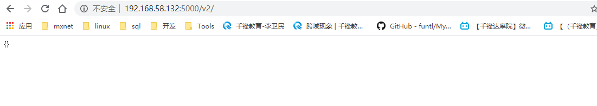
浏览器访问Web UI：
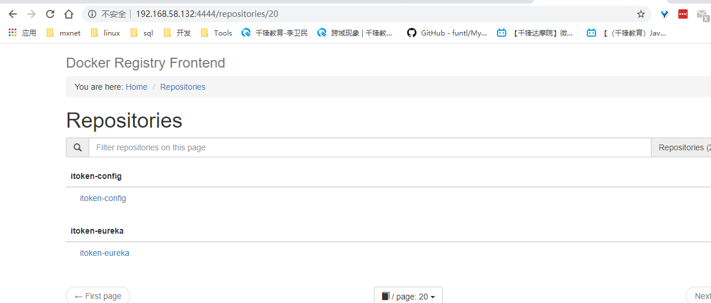
GitLab Runer
简介
理解了上面的基本概念之后，有没有觉得少了些什么东西 —— 由谁来执行这些构建任务呢？
答案就是 GitLab Runner 了！
想问为什么不是 GitLab CI 来运行那些构建任务？
一般来说，构建任务都会占用很多的系统资源 (譬如编译代码)，而 GitLab CI 又是 GitLab 的一部分，如果由 GitLab CI 来运行构建任务的话，在执行构建任务的时候，GitLab 的性能会大幅下降。
GitLab CI 最大的作用是管理各个项目的构建状态，因此，运行构建任务这种浪费资源的事情就交给 GitLab Runner 来做拉！
因为 GitLab Runner 可以安装到不同的机器上，所以在构建任务运行期间并不会影响到 GitLab 的性能
安装
环境准备
- 创建工作目录
/usr/local/docker/runner
- 创建构建目录
/usr/local/docker/runner/environment
- 下载
jdk-8u241-linux-x64.tar.gz 并复制到 /usr/local/docker/runner/environment
- 下载
apache-maven-3.6.3-bin.tar.gz 并复制到 /usr/local/docker/runner/environment
- 将Docker仓库位置和加速复制到
/usr/local/docker/runner/environment
- 将Maven的setting的配置文件复制到
/usr/local/docker/runner/environment
- 将下载好的
docker-compose复制到/usr/local/docker/runner/environment
ps:请根据自身的文件名称，来自行修改Dockerfile
Docker私服地址
在 /usr/local/docker/runner/environment 目录下创建 daemon.json，用于配置加速器和仓库地址
1
2
3
4
5
6
7
8
| {
"registry-mirrors": [
"https://registry.docker-cn.com"
],
"insecure-registries": [
"192.168.58.132:5000"
]
}
|
Dockerfile
1
2
3
4
5
6
7
8
9
10
11
12
13
14
15
16
17
18
19
20
21
22
23
24
25
26
27
28
29
30
31
32
33
34
35
36
37
38
39
40
41
42
43
44
45
46
47
48
49
50
51
| FROM gitlab/gitlab-runner
RUN echo 'deb http://mirrors.aliyun.com/ubuntu/ xenial main restricted universe multiverse' > /etc/apt/sources.list && \
echo 'deb http://mirrors.aliyun.com/ubuntu/ xenial-security main restricted universe multiverse' >> /etc/apt/sources.list && \
echo 'deb http://mirrors.aliyun.com/ubuntu/ xenial-updates main restricted universe multiverse' >> /etc/apt/sources.list && \
echo 'deb http://mirrors.aliyun.com/ubuntu/ xenial-backports main restricted universe multiverse' >> /etc/apt/sources.list && \
apt-get update -y && \
apt-get clean
RUN apt-get -y install wget apt-transport-https ca-certificates curl software-properties-common && \
curl -fsSL get.docker.com -o get-docker.sh && \
sh get-docker.sh --mirror Aliyun
RUN mkdir -p /etc/docker/ &&\
mkdir -p /usr/local/java && \
mkdir -p /usr/local/maven
COPY daemon.json /etc/docker/daemon.json
WORKDIR /usr/local/bin
COPY docker-compose /usr/local/bin
RUN chmod +x docker-compose
WORKDIR /usr/local/java
COPY jdk-8u241-linux-x64.tar.gz /usr/local/java
RUN tar -zxvf jdk-8u241-linux-x64.tar.gz && \
rm -fr jdk-8u241-linux-x64.tar.gz
WORKDIR /usr/local/maven
COPY apache-maven-3.6.3-bin.tar.gz /usr/local/maven
RUN tar -zxvf apache-maven-3.6.3-bin.tar.gz && \
rm -fr apache-maven-3.6.3-bin.tar.gz
COPY settings.xml /usr/local/maven/apache-maven-3.6.3/conf/settings.xml
ENV JAVA_HOME /usr/local/java/jdk1.8.0_241
ENV MAVEN_HOME /usr/local/maven/apache-maven-3.6.3
ENV PATH $PATH:$JAVA_HOME/bin
ENV PATH $PATH:$MAVEN_HOME/bin
WORKDIR /
|
docker-compose.yml
1
2
3
4
5
6
7
8
9
10
| version: '3.1'
services:
gitlab-runner:
build: environment
restart: always
container_name: gitlab-runner
privileged: true
volumes:
- ./config:/etc/gitlab-runner
- /var/run/docker.sock:/var/run/docker.sock
|
注册到GitLab
GitLab
打开被集成的项目
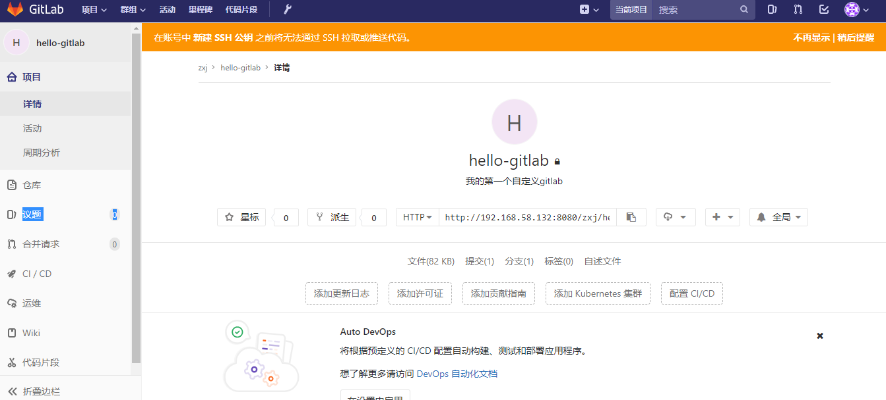
项目 –> 设置 –> CI/CD –> Runner 设置
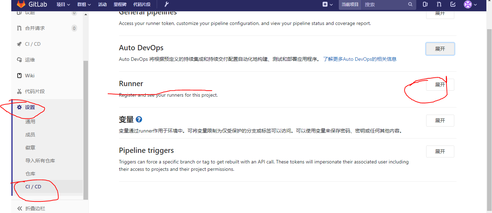
获取GitLab CI 地址与令牌参数
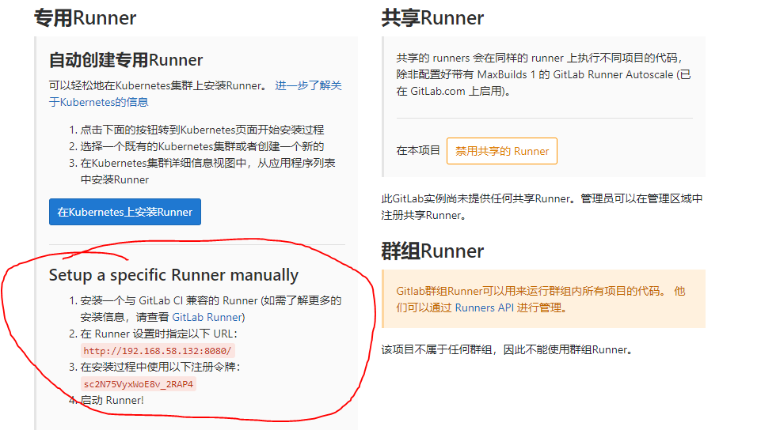
GitLab Runner
注册 Runner
1
2
3
4
5
6
7
8
9
10
11
12
13
14
15
16
17
18
19
20
21
22
23
24
25
26
27
28
29
| docker exec -it gitlab-runner gitlab-runner register
# 输入 GitLab 地址
Please enter the gitlab-ci coordinator URL (e.g. https://gitlab.com/):
http://192.168.10.132/
# 输入 GitLab Token
Please enter the gitlab-ci token for this runner:
1Lxq_f1NRfCfeNbE5WRh
# 输入 Runner 的说明
Please enter the gitlab-ci description for this runner:
可以为空
# 设置 Tag，可以用于指定在构建规定的 tag 时触发 ci
Please enter the gitlab-ci tags for this runner (comma separated):
deploy
# 这里选择 true ，可以用于代码上传后直接执行
Whether to run untagged builds [true/false]:
true
# 这里选择 false，可以直接回车，默认为 false
Whether to lock Runner to current project [true/false]:
false
# 选择 runner 执行器，这里我们选择的是 shell
Please enter the executor: virtualbox, docker+machine, parallels, shell, ssh, docker-ssh+machine, kubernetes, docker, docker-ssh:
shell
|
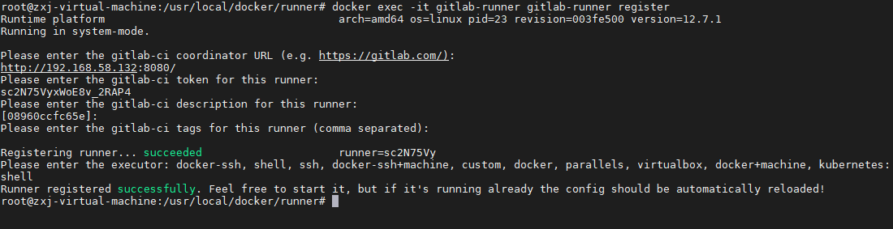
此时项目已经注册到GitLab Runner
项目设置
目录结构
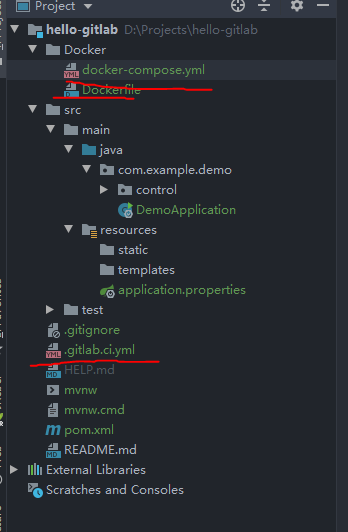
.gitlab-ci.yml
在项目工程下编写 .gitlab-ci.yml 配置文件：
1
2
3
4
5
6
7
8
9
10
11
12
13
14
15
16
17
18
19
20
21
22
23
24
25
26
27
28
29
30
31
| stages:
- build
- push
- run
- clean
build:
stage: build
script:
- /usr/local/maven/apache-maven-3.6.3/bin/mvn clean package -DskipTests
- cp target/demo-0.0.1-SNAPSHOT.jar Docker/
- cd Docker
- docker build -t 192.168.58.132:5000/hello-gitlab .
push:
stage: push
script:
- docker push 192.168.58.132:5000/hello-gitlab
run:
stage: run
script:
- cd Docker
- docker-compose down
- docker-compose up -d
clean:
stage: clean
script:
- docker image prune -f
|
Docker文件夹
编写Dockerfile构建镜像
1
2
3
4
5
6
7
8
9
10
11
| FROM openjdk:8-jre
MAINTAINER zxj <qluzxj@outlook.com>
RUN mkdir /app
COPY demo-0.0.1-SNAPSHOT.jar /app/app.jar
ENTRYPOINT ["java", "-Djava.security.egd=file:/dev/./urandom", "-jar", "/app/app.jar"]
EXPOSE 8080
|
编写docker-compose.yml执行
1
2
3
4
5
6
7
8
9
| version: "3.1"
services:
iToken-config:
image: 192.168.58.132:5000/hello-gitlab
container_name: hello-gitlab
restart: always
ports:
- 1234:8080
|
测试
提交代码，出发构建
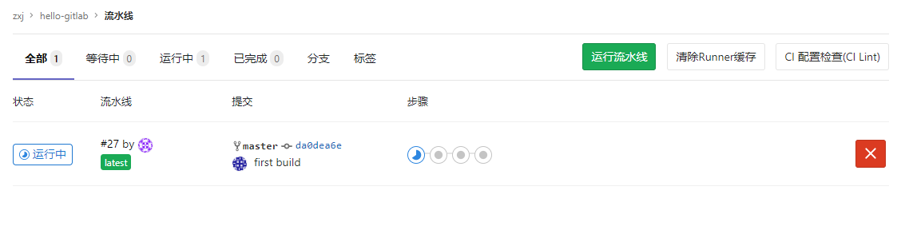
构建成功
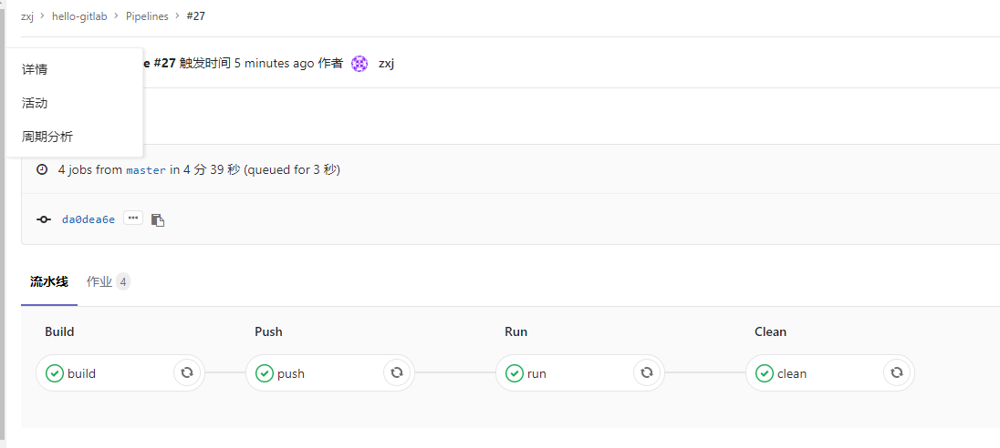
查看Docker Registry仓库
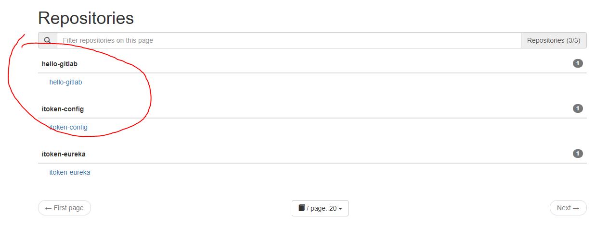
查看项目运行
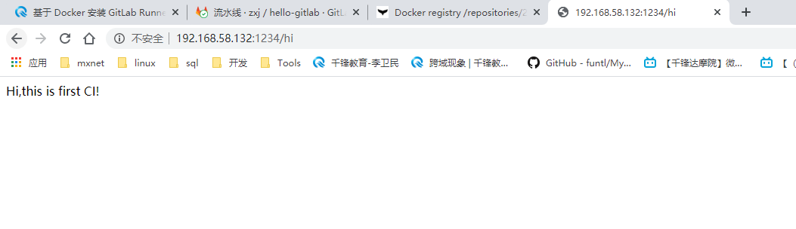
修改代码再次提交
1
2
3
4
| @RequestMapping("hi")
public String sayHi(){
return "Hi,this is first CI!";
}
|
改为
1
2
3
4
| @RequestMapping("hi")
public String sayHi(){
return "Hi,this is second CI!";
}
|
再次运行
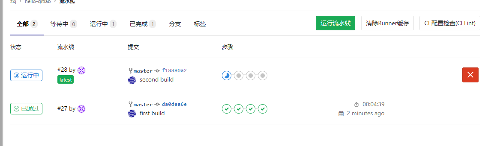
查看结果
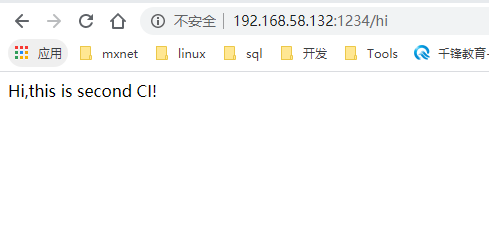
完结
至此，完结。
参考资料
持续集成的基本概念